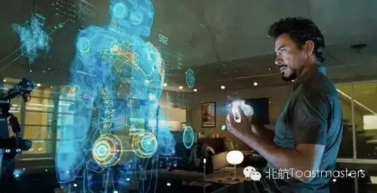
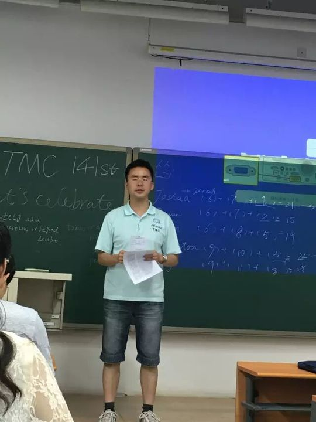
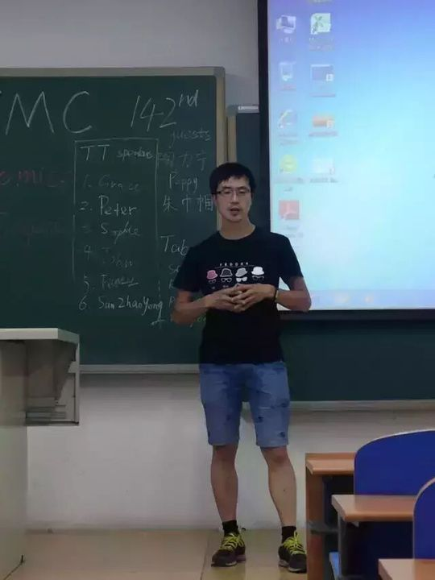
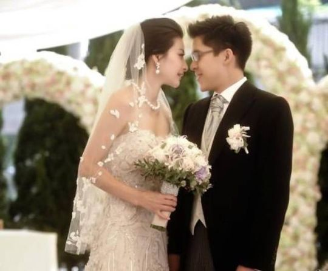

Qiqi
从破冰到主持、点评、比赛全程在场的"敢于尝试"型头马成长样本，那个落落大方、声情并茂的女神级演讲者。
会员活跃 2016–2017出现 20 次 · 19 篇11 场演讲
赵奇琪（Qiqi）是北航Toastmasters一段完整成长故事的主角。2016年3月，作为新会员的她在第130次会议上完成破冰演讲《My Life Long Career》，分享自己对终身职业的态度。此后她几乎每月都站上讲台，CC2《At least I try》、CC3《我的爱情故事》、CC4《Tom's three lessons》、CC5《Stay hungry》《English, 7F and me》、CC6《The chubby girl》一路稳步推进，是俱乐部里少有的、按CC手册逐级打磨自己的"老会员"。
她的演讲常被纪要称作"声情并茂、富有创意"，多次拿下最佳备稿演讲（Best Speaker），被小编亲切地唤作"女神Qiqi""大琪"。她的故事题材广泛而真诚——从减肥的胖女孩、跳肚皮舞的自己，到与英语相伴多年的点滴，再到独自留学意大利都灵、从笨手笨脚学做饭到单身上路游罗马的勇气。"这个丫头有点怂"的题目背后，恰恰是她坚定那份害怕依旧前行的决心。
Qiqi不只是演讲者，更是俱乐部运转的重要一员：她多次担任Toastmaster主持人（第134、177次等）、即兴主持TTM（第147次等），还在第171次会议拿到最佳点评官（Best Evaluator）。比赛舞台上同样有她——2017春季赛她作即兴演讲（想回到以胖为美的唐朝），秋季赛则与John、Huan一同登上俱乐部特色的"点评演讲比赛"。
她活泼、勇敢、爱美又自嘲，把每一次上台都当成"At least I try"的实践。从破冰新人到全能老会员，赵奇琪用一年多时间，在北航头马留下了一串扎实而温暖的脚印。
里程碑
- 2016-03-25 入会破冰 ↗作为新会员在第130次会议完成破冰演讲CC1《My Life Long Career》。
- 2016-04-22 首次担任主持 ↗在第134次会议(Exercise)担任Toastmaster主持人。
- 2016-06-17 首获最佳备稿演讲 ↗CC3《我的爱情故事》声情并茂、富有创意，被评为女神级最佳备稿演讲。
- 2017-03-17 登上比赛舞台 ↗在春季演讲比赛中参加英文即兴演讲(时光机·回到唐朝)。
- 2017-04-23 最佳点评官 ↗在第171次会议获得Best Evaluator。
- 2017-09-01 秋季点评演讲比赛 ↗与John、Huan一同参加俱乐部特色的点评演讲比赛。
闯关之路 · Competent Communication
✓
CC1
破冰
✓
CC2
组织你的演讲
✓
CC3
明确目标
✓
CC4
怎么说
✓
CC5
肢体在说话
✓
CC6
声音的变化
CC7
研究你的主题
CC8
善用视觉辅助
CC9
以理服人
CC10
激励听众
做过的演讲 · 11 场
破冰演讲，作为新会员分享自己对终身职业的态度，让大家猜她想从事的事业。
即兴演讲针对问题本身雷厉风行地展开作答，被赞GET新技能。
以'只要敢于尝试'为题，分享自己的尝试与成长，演讲中展现跳肚皮舞的一面，努力的女孩最漂亮。
声情并茂讲述生命中重要的'男友'——给她力量的人、上辈子情人老爸、最支持她的哥哥，富有创意，获最佳备稿演讲。
借'Tom'之名设悬念，分享Tom教给她的三个重要人生课题。
分享自己与英语多年相伴的故事和学习心得，并解释'7F'的含义。
受乔布斯'Stay hungry'启发，分享对求知若渴、探索未知的理解。
春季赛英文即兴演讲，回答若能穿越想回到唐朝，因那时以胖为美、文化与生活条件宜人。
分享独自留学意大利都灵的奇闻趣事，从笨手笨脚学做饭到单身游罗马，讲勇气是带着害怕依旧前行。
讲述一个女孩为健康与美而减肥、与体重抗争的故事。
与John、Huan一同参加俱乐部特色的点评演讲比赛。
担任过的会议角色
Toastmaster主持×3即兴主持TTM×2点评官Evaluator备稿演讲者×8比赛选手×2
为俱乐部做的事
- 多次担任Toastmaster主持人与即兴主持TTM，撑起会议流程并设计即兴话题环节
- 持续按CC手册逐级完成破冰到CC6的备稿演讲，以高质量演讲为新会员树立成长样本
- 担任点评官并获最佳点评官，帮助讲者改进
- 代表俱乐部参加春季赛即兴演讲与秋季赛点评演讲比赛
- 以勇敢、真诚、富创意的演讲风格营造温暖活跃的俱乐部氛围
头马里的人
同台搭档
Rocky照片墙 · 时间线
共 30 帧，其中 4 帧已用人脸识别确认是本人（带 ✓）。
 ✓
✓ ✓
✓ ✓
✓ ✓
✓












完整足迹 · 19 次出现（点开，每条可跳转原文）
- 2016-03-24第130次 · 新会员做CC1演讲《My Life Long Career》
- 2016-04-21第134次 · 担任134次会议Toastmaster(会议主持)
- 2016-06-05第140次 · 即兴演讲回答是否与八戒去西天取经
- 2016-06-09第141次 · 预告演讲《At least I try》
- 2016-06-14第141次 · 做演讲《At least I try》
- 2016-06-16第142次 · 预告CC3演讲《My Love Story》
- 2016-06-20第142次 · 做CC3演讲《我的爱情故事》，获最佳备稿演讲
- 2016-06-27你画我猜游戏中观察能力出色
- 2016-07-15第145次 · 做CC4演讲Tom's three lessons
- 2016-07-29第147次 · 做CC5演讲English, 7F and me
- 2017-03-16第167次 · 预告做CC5演讲Stay hungry
- 2017-03-17第166次 · 春季比赛即兴演讲称想回到唐朝
- 2017-03-19第167次 · 即兴演讲谈遇问题先自我反省找解决方案
- 2017-03-24第168次 · 时光机@BeihangTMC 168th Meeting 19:30 Mar.2
- 2017-03-28第168次 · 时光机@BeiHang ToastMaster 168 Meeting Minu
- 2017-04-23Love@BeiHangTMC-171th-Meeting Minutes
- 2017-05-18第174次 · Scope@Beihang TMC174th Meeting@19:30 May
- 2017-06-16第177次 · House@BeihangTMC 177th Meeting 19:30 Jun
- 2017-09-01BeiHang TMC 2017 Fall speech contest
“只要敢于尝试，就能体会不一样的人生。At least I try.”